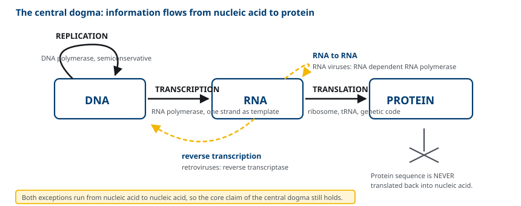
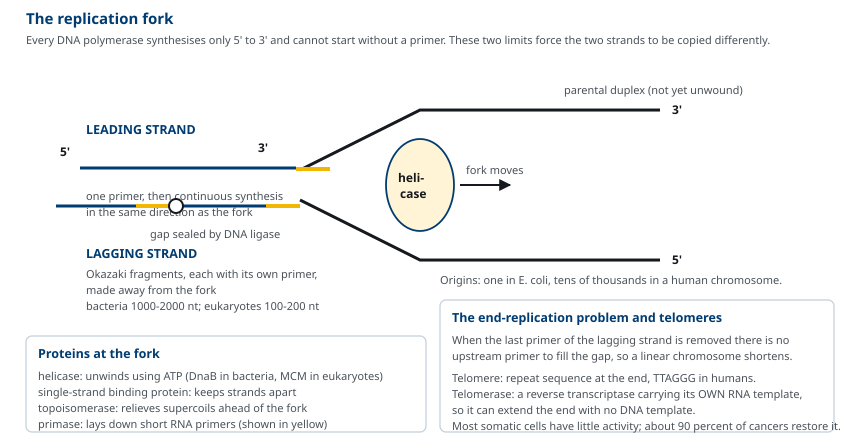
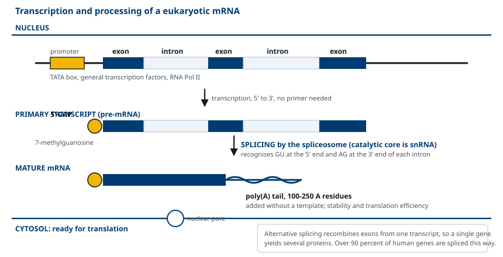
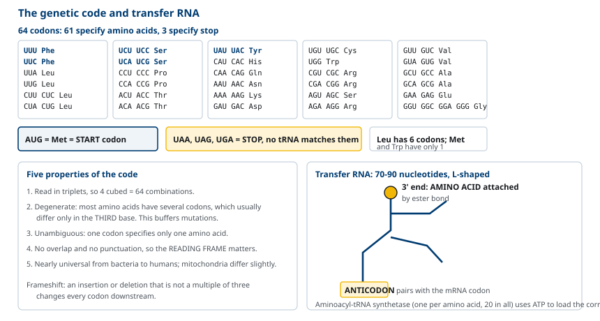
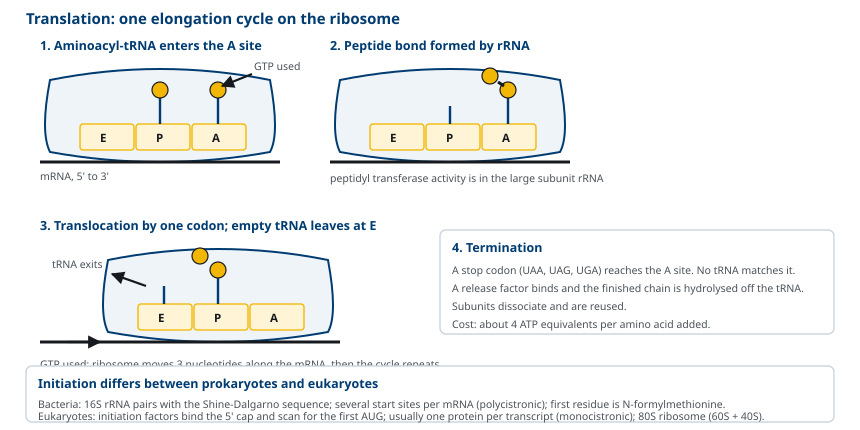

M01-W05-L03 · 인체일반생물학과 기초세포생물학
유전정보의 흐름: 복제·전사·번역
The Flow of Genetic Information: Replication, Transcription and Translation
학습목표
- DNA가 유전물질임을 보인 실험들의 논리를 설명하고 central dogma의 내용과 예외를 든다.
- DNA 복제가 반보존적임을 보인 Meselson-Stahl 실험의 설계와 결과를 해석한다.
- 복제분기점에서 leading strand와 lagging strand가 달리 합성되는 이유를 효소의 성질로 설명한다.
- 복제의 정확도를 높이는 세 가지 장치를 구분하고 telomere 문제와 그 해결을 설명한다.
- 전사의 개시·신장·종결을 원핵과 진핵에서 비교하고 promoter의 역할을 설명한다.
- 진핵 mRNA의 세 가지 가공 과정과 그 기능을 설명한다.
- 유전암호의 성질을 다섯 가지로 정리하고 codon 표를 읽어 서열을 번역한다.
- 번역의 개시·신장·종결 단계를 설명하고 원핵과 진핵의 차이를 든다.
선수지식
- M01-W05-L02 생체분자와 막의 구조 — nucleotide, phosphodiester 결합, 5′→3′ 방향, 염기쌍
- M01-W05-L01 세포의 기원·진화와 세포 연구 방법 — prokaryote와 eukaryote의 유전체 차이, 전사와 번역의 공간 분리
- M01-W05-L03 생체에너지: 자유에너지와 ATP — 효소의 촉매 작용, ATP와 GTP의 가수분해
강의 구성
- 1. DNA가 유전물질이라는 결론과 central dogma
- 2. 반보존적 복제와 Meselson-Stahl 실험
- 3. DNA 복제의 기전
- 4. 복제의 정확도와 수선
- 5. 전사: RNA polymerase와 promoter
- 6. 진핵 mRNA의 가공
- 7. 유전암호와 tRNA
- 8. 번역: ribosome의 세 단계와 원핵·진핵의 차이
1. DNA가 유전물질이라는 결론과 central dogma
20세기 전반까지 유전물질이 단백질이라는 견해가 우세했다. 단백질이 20종의 아미노산으로 이루어져 다양성이 크고, DNA는 네 종의 nucleotide로만 이루어져 단순해 보였기 때문이다. 세 실험이 이 견해를 뒤집었다.
Griffith(1928)의 형질전환 독성이 없는 S. pneumoniae의 R형에 열로 죽인 독성 S형을 섞어 주사하자 R형이 독성을 갖게 되었다. 죽은 세포에서 나온 어떤 물질이 형질을 옮긴다는 뜻이었지만 그 물질의 정체는 밝히지 못했다.
Avery, MacLeod, McCarty(1944) 열처리한 S형 추출물에서 단백질, RNA, 다당류를 각각 제거했을 때는 형질전환이 유지되었으나, DNase로 DNA를 분해하면 형질전환이 사라졌다. 형질전환 물질이 DNA라는 결론이다.
Hershey와 Chase(1952) 박테리오파지의 단백질 껍질은 ³⁵S로, DNA는 ³²P로 표지했다. 파지를 세균에 감염시킨 뒤 흔들어 껍질을 떼어내고 원심분리로 나누자, 세균 안으로 들어가 다음 세대 파지에 전달되는 것은 ³²P, 즉 DNA였다.
이 결론 위에 1958년 Francis Crick이 정보의 흐름 방향을 정리했다. Central dogma다.
DNA --(복제)--> DNA --(전사)--> RNA --(번역)--> 단백질
세 가지를 구별해야 한다. DNA에서 DNA로 가는 복제, DNA에서 RNA로 가는 전사, RNA에서 단백질로 가는 번역이다. 정보는 이 방향으로만 흐르고, 단백질의 아미노산 서열이 핵산 서열로 거꾸로 번역되는 일은 일어나지 않는다.
다만 핵산 사이의 흐름에는 예외가 있다. Retrovirus의 reverse transcriptase는 RNA를 주형으로 DNA를 만들고, RNA virus의 RNA 의존 RNA polymerase는 RNA에서 RNA를 만든다. 두 예외는 모두 핵산에서 핵산으로의 흐름이므로 central dogma의 핵심, 즉 단백질에서 핵산으로 되돌아가지 않는다는 주장은 유지된다.

2. 반보존적 복제와 Meselson-Stahl 실험
Watson과 Crick이 1953년 이중나선 구조를 제시하면서 복제 방식도 예측했다. 두 사슬이 상보적이므로, 사슬을 떼어 각각을 주형으로 쓰면 원래와 같은 두 분자가 만들어진다. 이것을 반보존적 복제(semiconservative replication)라 한다.
경쟁 가설이 둘 있었다. 보존적 복제는 원래 두 사슬이 함께 남고 완전히 새로운 두 사슬이 따로 만들어진다는 것이고, 분산적 복제는 새 DNA가 원래 조각과 새 조각이 섞여 있다는 것이다.
Matthew Meselson과 Franklin Stahl(1958)이 세 가설을 구별했다. 설계가 명료하다.
1. *E. coli*를 무거운 질소 동위원소 ¹⁵N이 든 배지에서 여러 세대 키워 DNA 전체를 ¹⁵N으로 표지한다. 2. 이 세균을 보통 ¹⁴N 배지로 옮기고 한 세대, 두 세대 뒤의 DNA를 각각 뽑는다. 3. CsCl 밀도구배 평형 원심분리로 DNA를 밀도에 따라 분리한다.
결과는 다음과 같았다.
| 세대 | 관찰된 띠 | 반보존적 예측 | 보존적 예측 | 분산적 예측 |
|---|---|---|---|---|
| 0세대 | 무거운 띠 1개 | 일치 | 일치 | 일치 |
| 1세대 | 중간 밀도 띠 1개 | 일치 | 무거운 띠 + 가벼운 띠 | 중간 띠 |
| 2세대 | 중간 띠 + 가벼운 띠, 1:1 | 일치 | 무거운 1 : 가벼운 3 | 중간보다 가벼운 띠 1개 |
1세대에서 중간 밀도 띠만 나온 것이 보존적 복제를 배제했다. 2세대에서 중간 띠와 가벼운 띠가 같은 양으로 나뉘어 나온 것이 분산적 복제를 배제했다. 분산적이라면 모든 분자가 균일하게 가벼워져 하나의 띠로 나와야 한다.
이 실험은 세포분획 기법(밀도구배 평형 원심분리)이 어떻게 분자 수준의 질문에 답하는지를 보여주는 사례이기도 하다.
3. DNA 복제의 기전
복제는 replication origin에서 시작한다. *E. coli*는 환상 유전체에 origin이 하나(oriC)지만, 사람의 염색체에는 수만 개가 있어 동시에 여러 지점에서 시작한다. 사람의 유전체 3,200 Mb를 하나의 origin으로 복제한다면 수 주가 걸리므로, 다중 origin이 S기를 몇 시간으로 줄인다.
Origin에서 두 방향으로 복제분기점(replication fork)이 진행한다. 분기점에서 일어나는 일을 순서대로 본다.
- Helicase가 ATP를 써서 두 사슬을 떼어낸다. *E. coli*는 DnaB, 사람은 MCM 복합체다.
- Single-strand binding protein이 떨어진 사슬에 붙어 다시 짝지어지는 것을 막는다.
- Topoisomerase가 사슬이 풀릴 때 앞쪽에 생기는 꼬임(supercoil)을 끊고 다시 이어 해소한다.
- Primase가 짧은 RNA primer를 만든다.
- DNA polymerase가 primer의 3′ 말단에 nucleotide를 붙여 사슬을 늘린다.
여기서 중요한 제약이 두 가지 있다. 첫째, 모든 DNA polymerase는 5′→3′ 방향으로만 합성한다. 둘째, primer 없이 사슬을 새로 시작할 수 없다. 두 사슬은 서로 반대 방향이므로 이 제약 때문에 두 사슬의 합성 방식이 달라진다.
- Leading strand: 분기점이 진행하는 방향과 합성 방향이 같다. primer 하나로 연속해서 합성한다.
- Lagging strand: 분기점 진행 방향과 합성 방향이 반대다. 분기점이 나아가 주형이 노출될 때마다 primer를 새로 만들고 짧은 조각을 거꾸로 합성한다. 이 조각을 Okazaki fragment라 하며 세균에서 1,000~2,000 nucleotide, 진핵에서 100~200 nucleotide다.
Lagging strand를 마무리하려면 세 단계가 더 필요하다. RNA primer를 제거하고(RNase H와 5′→3′ exonuclease 활성), 생긴 빈자리를 DNA polymerase가 채우고, DNA ligase가 인접 조각의 3′-OH와 5′-인산 사이에 phosphodiester 결합을 만든다.

선형 염색체의 말단 문제가 남는다. Lagging strand의 가장 끝 primer를 제거하면 그 자리를 채울 primer를 앞쪽에 둘 수 없어 염색체가 매 복제마다 짧아진다. 해결은 telomere와 telomerase다. Telomere는 염색체 말단의 반복 서열(사람은 TTAGGG)이고, telomerase는 자신의 RNA를 주형으로 쓰는 reverse transcriptase여서 주형 DNA 없이 말단을 늘릴 수 있다. 사람의 체세포 대부분은 telomerase 활성이 낮아 분열마다 telomere가 짧아지고, 일정 길이 아래로 떨어지면 분열이 멈춘다. 이것이 M01-W05-L01에서 다룬 replicative senescence의 분자적 근거다.
4. 복제의 정확도와 수선
사람의 복제 오류율은 nucleotide당 약 10⁻¹⁰이다. 3,200 Mb를 복제하면서 오류가 한 개 미만이라는 뜻이다. 중합효소 자체의 정확도만으로는 이 수준에 도달할 수 없고, 세 장치가 차례로 오류를 걸러낸다.
1. 중합효소의 기질 선택 올바른 염기쌍만 활성 부위의 기하 구조에 맞으므로 잘못된 nucleotide의 결합이 드물다. 이 단계의 오류율은 약 10⁻⁵이다. 2. 3′→5′ exonuclease에 의한 교정(proofreading) DNA polymerase는 합성 활성 외에 방금 붙인 nucleotide를 떼어내는 활성을 함께 갖는다. 짝이 맞지 않으면 사슬 말단이 불안정해져 exonuclease 부위로 옮겨가 제거된다. 여기서 오류율이 약 10⁻⁷로 내려간다. 3. Mismatch repair 복제 후에도 남은 짝 불일치를 따로 인식해 고친다. 새로 합성된 사슬을 구별해 그쪽만 잘라내고 다시 합성한다. 최종 오류율이 약 10⁻¹⁰이 된다.
DNA는 복제와 무관하게도 끊임없이 손상된다. 탈아미노화, 산화, 자외선에 의한 pyrimidine dimer, 알킬화가 일어난다. 수선 경로는 손상의 종류에 따라 나뉜다.
| 수선 경로 | 다루는 손상 | 결손 시 질환 |
|---|---|---|
| Mismatch repair | 복제 후 남은 짝 불일치 | Lynch syndrome(유전성 비폴립 대장암) |
| Base excision repair | 산화·탈아미노화된 염기 하나 | |
| Nucleotide excision repair | 자외선 pyrimidine dimer 등 부피 큰 손상 | Xeroderma pigmentosum |
| 이중사슬 절단 수선(HR, NHEJ) | 두 사슬이 모두 끊어진 경우 | BRCA1·BRCA2 변이 유방·난소암 |
5. 전사: RNA polymerase와 promoter
전사는 DNA 한쪽 사슬을 주형으로 RNA를 만드는 과정이다. DNA 복제와 공통점과 차이점을 함께 본다.
| 항목 | DNA 복제 | 전사 |
|---|---|---|
| 주형 | 두 사슬 모두 | 한 사슬만(유전자에 따라 어느 쪽인지 정해진다) |
| 산물 | 이중나선 DNA | 단일사슬 RNA |
| Primer | 필요 | 불필요 |
| 기질 | dNTP | NTP |
| 방향 | 5′→3′ | 5′→3′ |
| 교정 활성 | 있다 | 거의 없다(오류율 약 10⁻⁴) |
| 범위 | 유전체 전체 | 필요한 유전자만 |
전사의 정확도가 낮아도 문제가 적은 이유는 RNA가 일시적이고 한 유전자에서 많은 copy가 만들어지기 때문이다. 하나에 오류가 있어도 나머지가 정상이다.
개시는 RNA polymerase가 promoter에 결합하는 것이다. Promoter는 전사 시작점 앞쪽의 DNA 서열로, 어디서 시작할지와 어느 사슬을 주형으로 쓸지를 정한다.
- 세균: RNA polymerase 한 종류가 모든 RNA를 만든다. σ 인자가 promoter의 −10 서열(TATAAT)과 −35 서열(TTGACA)을 인식한다.
- 진핵: RNA polymerase가 세 종류로 나뉜다. Pol I은 rRNA, Pol II는 mRNA와 대부분의 조절 RNA, Pol III은 tRNA와 5S rRNA를 만든다. Pol II는 혼자 promoter를 인식하지 못하고 일반 전사인자(TFIID 등)가 먼저 TATA box에 결합해 자리를 잡아 주어야 한다.
신장에서는 polymerase가 주형 사슬을 따라 움직이며 nucleotide를 붙인다. 세균은 약 50 nucleotide/초, 진핵은 그보다 느리다. 종결은 세균에서 두 방식(hairpin 구조에 의한 종결과 Rho 인자 의존 종결)으로 일어나고, 진핵 Pol II에서는 polyadenylation 신호 서열이 인식된 뒤 전사체가 잘리며 끝난다.
진핵의 전사 조절은 promoter만으로 이루어지지 않는다. 수천 염기쌍 떨어진 enhancer에 조절 단백질이 결합하고, DNA가 휘어 promoter와 접촉한다. 이 거리를 둔 조절이 같은 유전체로 수백 종의 세포를 만들어 내는 기반이다.
6. 진핵 mRNA의 가공
세균에서는 mRNA가 전사되는 동시에 번역된다. 진핵에서는 전사가 핵에서, 번역이 세포질에서 일어나므로 그 사이에 가공 단계가 들어간다. 세 가지다.
5′ cap 전사가 시작된 직후 첫 nucleotide의 5′ 말단에 7-methylguanosine이 거꾸로 결합한다. 세 가지 기능을 한다. 5′ exonuclease로부터 RNA를 보호하고, 핵에서 세포질로 나가는 수송을 돕고, 번역 개시에서 ribosome이 mRNA를 인식하는 표지가 된다.
3′ polyadenylation 전사체가 잘린 뒤 poly(A) polymerase가 주형 없이 adenine을 100~250개 붙인다. mRNA의 안정성을 높이고 번역 효율을 올린다. poly(A) 꼬리가 짧아지는 것이 mRNA 분해의 첫 단계다.
Splicing 진핵 유전자는 단백질을 암호화하는 exon과 그렇지 않은 intron이 교대로 배열되어 있다. 전사체에서 intron을 잘라내고 exon을 이어 붙이는 과정이 splicing이다. 사람 유전자의 평균 intron 수는 약 8개이고, intron이 유전자 길이의 대부분을 차지한다. DMD 유전자는 2.2 Mb이지만 mRNA는 14 kb다.
Splicing은 snRNA와 단백질로 이루어진 spliceosome이 수행하며, 촉매 부위는 단백질이 아니라 snRNA다. 인식 신호는 intron 양 끝의 짧은 서열(5′의 GU, 3′의 AG)과 그 안쪽의 branch point다.
Alternative splicing이 진핵 유전자의 정보량을 늘린다. 같은 전사체에서 exon을 다르게 조합하면 여러 단백질이 만들어진다. 사람 유전자의 90% 이상이 alternative splicing을 거치며, 이것이 유전자 약 20,000개로 그보다 훨씬 많은 종류의 단백질을 만드는 주된 이유다.

7. 유전암호와 tRNA
mRNA의 염기 서열이 어떻게 아미노산 서열로 읽히는가. 염기는 4종, 아미노산은 20종이므로 염기 하나로는 4종, 둘로는 16종까지만 지정할 수 있다. 셋이면 64종이 되어 충분하다. 실제로 유전암호는 염기 세 개, 즉 codon 단위로 읽힌다.
유전암호의 성질은 다섯 가지로 정리된다.
- 세 염기 단위: 64개 codon이 있다. 61개가 아미노산을, 3개(UAA, UAG, UGA)가 종결을 지정한다.
- 중복성(degenerate): 대부분의 아미노산이 여러 codon으로 지정된다. Leucine은 6개, methionine과 tryptophan은 1개다.
- 모호하지 않음(unambiguous): 하나의 codon은 하나의 아미노산만 지정한다.
- 겹치지 않고 띄어쓰기가 없음: codon이 연속해서 읽히며 사이에 구분 기호가 없다. 그래서 읽기 틀(reading frame)이 중요하다.
- 거의 보편적(universal): 세균부터 사람까지 거의 같다. 미토콘드리아 유전암호에 몇 가지 예외가 있다.
중복성에는 규칙성이 있다. 같은 아미노산을 지정하는 codon들은 대개 세 번째 염기만 다르다. 그래서 세 번째 염기의 치환은 아미노산을 바꾸지 않는 경우가 많다(silent mutation). 이 배치는 변이의 영향을 줄이는 완충 장치로 작동한다.
읽기 틀의 중요성은 변이의 종류로 드러난다.
| 변이 | 서열 변화 | 결과 |
|---|---|---|
| Silent | codon의 염기 하나 치환 | 아미노산이 바뀌지 않는다 |
| Missense | codon의 염기 하나 치환 | 다른 아미노산이 들어간다 |
| Nonsense | codon의 염기 하나 치환 | 종결 codon이 되어 단백질이 짧아진다 |
| Frameshift | 3의 배수가 아닌 삽입·결실 | 그 뒤의 모든 codon이 바뀌어 전혀 다른 단백질이 된다 |
tRNA가 codon과 아미노산을 잇는다. tRNA는 70~90 nucleotide의 RNA가 접혀 클로버 모양의 2차 구조와 L자 모양의 3차 구조를 이룬다. 두 부위가 기능을 담당한다. 한쪽 끝의 anticodon이 mRNA의 codon과 상보적으로 짝지어지고, 반대쪽 3′ 말단에 아미노산이 ester 결합으로 붙는다.
아미노산을 올바른 tRNA에 붙이는 일은 aminoacyl-tRNA synthetase가 한다. 아미노산 종류마다 하나씩 있어 20종이고, ATP를 써서 아미노산을 활성화한 뒤 tRNA에 옮긴다. 이 효소가 유전암호를 실제로 구현하는 지점이다. 효소가 아미노산을 잘못 붙이면 ribosome은 anticodon만 확인하므로 잘못된 아미노산이 그대로 들어간다. 그래서 이 효소들은 자체 교정 활성을 갖는다.

8. 번역: ribosome의 세 단계와 원핵·진핵의 차이
Ribosome은 두 소단위로 이루어진 rRNA와 단백질의 복합체다. 큰 소단위가 peptide 결합을 만들고(peptidyl transferase 활성은 rRNA가 담당한다), 작은 소단위가 mRNA와 결합해 codon-anticodon 짝짓기를 확인한다. tRNA가 머무는 자리가 세 곳 있다. A 자리(aminoacyl-tRNA가 들어온다), P 자리(사슬이 붙어 있는 tRNA), E 자리(빠져나가는 tRNA).
개시 세균과 진핵에서 방식이 다르다.
- 세균: 작은 소단위의 rRNA가 mRNA의 Shine-Dalgarno 서열과 염기쌍을 이루어 개시 codon을 찾는다. mRNA 하나에 여러 개시 지점이 있을 수 있어 여러 단백질이 한 전사체에서 만들어진다(polycistronic).
- 진핵: 개시인자가 5′ cap을 인식해 결합한 뒤 mRNA를 훑어 첫 AUG를 찾는다. 따라서 보통 전사체 하나에서 단백질 하나가 만들어진다(monocistronic).
개시 아미노산은 methionine이고(세균은 N-formylmethionine), 개시 codon은 AUG다.
신장 세 단계가 반복된다. (1) A 자리에 codon과 맞는 aminoacyl-tRNA가 들어온다. (2) P 자리의 사슬 carboxyl 말단과 A 자리 아미노산의 amino기 사이에 peptide 결합이 생긴다. (3) ribosome이 codon 하나만큼 이동(translocation)하고 빈 tRNA가 E 자리로 빠진다. 각 단계에 GTP가 소모된다. 아미노산 하나를 붙이는 데 ATP 등가로 약 4분자가 들며, 이는 단백질 합성이 세포에서 가장 비용이 큰 과정 가운데 하나임을 뜻한다.
종결 A 자리에 종결 codon이 오면 이에 대응하는 tRNA가 없고, 대신 release factor가 결합해 사슬을 가수분해로 떼어낸다. Ribosome이 해체되고 소단위가 재사용된다.
원핵과 진핵의 차이를 정리한다.
| 항목 | 원핵 | 진핵 |
|---|---|---|
| Ribosome | 70S (50S + 30S) | 80S (60S + 40S) |
| 전사와 번역 | 같은 공간, 동시 진행 | 핵에서 전사, 세포질에서 번역 |
| mRNA 가공 | 거의 없음 | cap, poly(A), splicing |
| 개시 인식 | Shine-Dalgarno 서열 | 5′ cap과 스캐닝 |
| 전사체당 단백질 | 여러 개(polycistronic) | 보통 하나(monocistronic) |
| 개시 아미노산 | N-formylmethionine | methionine |

확인 문항
Meselson과 Stahl의 실험에서 1세대와 2세대의 결과가 각각 어떤 가설을 배제하는지 설명하라.
해설
1세대에서 중간 밀도의 띠 하나만 나온 결과가 보존적 복제를 배제한다. 보존적 복제라면 원래의 ¹⁵N 이중나선이 그대로 남고 완전히 새로운 ¹⁴N 이중나선이 따로 만들어져 무거운 띠와 가벼운 띠가 함께 보여야 한다. 2세대에서 중간 띠와 가벼운 띠가 1:1로 나뉘어 나온 결과가 분산적 복제를 배제한다. 분산적 복제라면 모든 분자에 새 조각과 옛 조각이 균일하게 섞여 단일한 띠가 세대마다 점점 가벼워지는 양상을 보여야 하고, 두 개의 분명한 띠로 나뉘지 않는다. 두 결과 모두 반보존적 복제의 예측과 일치한다.
DNA polymerase의 두 가지 성질, 즉 5′→3′ 방향으로만 합성한다는 것과 primer가 필요하다는 것이 lagging strand의 불연속 합성을 어떻게 강제하는지 설명하라.
해설
복제분기점에서 두 주형 사슬은 서로 반대 방향으로 놓여 있다. 한 주형에 대해서는 합성 방향이 분기점 진행 방향과 일치하므로 primer 하나로 계속 따라가며 연속 합성할 수 있다(leading strand). 다른 주형에 대해서는 합성 방향이 분기점 진행 방향과 반대이므로, 분기점이 나아가 새 주형이 노출될 때마다 노출된 구간의 가장 분기점에 가까운 쪽에 primer를 새로 만들고 분기점 반대 방향으로 짧은 조각을 합성해야 한다. 그 결과 Okazaki fragment가 생기고, primer 제거, 빈자리 채우기, DNA ligase에 의한 연결이 뒤따른다. 만약 polymerase가 3′→5′ 방향으로도 합성할 수 있거나 primer 없이 시작할 수 있었다면 두 사슬 모두 연속 합성이 가능했을 것이다.
복제의 오류율은 10⁻¹⁰이고 전사의 오류율은 10⁻⁴이다. 이 차이가 합리적인 이유를 설명하라.
해설
두 산물의 지속성과 복제 여부가 다르기 때문이다. DNA는 세포의 영속적 정보 저장체로 모든 딸세포에 전달되므로, 한 번의 오류가 그 세포 계통 전체에 영구히 남고 유전된다. 따라서 중합효소의 기질 선택, 3′→5′ exonuclease 교정, mismatch repair의 세 단계를 투자해 오류율을 10⁻¹⁰까지 낮출 가치가 있다. RNA는 일시적이고 한 유전자에서 여러 copy가 만들어진다. 전사체 하나에 오류가 있어도 나머지 copy가 정상 단백질을 만들고, 그 오류는 다음 세대로 전달되지 않는다. 교정 기구를 추가하면 속도가 떨어지고 에너지가 더 들므로, 정확도를 10⁻⁴에서 멈추는 것이 비용 대비 합리적이다.
어떤 유전자의 코딩 영역에 염기 하나가 삽입되는 변이와 염기 세 개가 삽입되는 변이가 있다. 두 변이의 결과가 크게 다른 이유를 유전암호의 성질로 설명하라.
해설
유전암호는 세 염기 단위로 연속해서 읽히며 codon 사이에 구분 기호가 없다. 염기 하나가 삽입되면 그 지점부터 뒤쪽의 모든 codon 경계가 한 칸 밀려 읽기 틀이 바뀌는 frameshift가 된다. 삽입 지점 이후의 아미노산 서열이 전혀 달라지고, 대개 틀이 바뀐 서열에서 곧 종결 codon이 나타나 단백질이 짧게 끊긴다. 염기 세 개가 삽입되면 codon 하나가 추가되는 것이므로 읽기 틀이 유지되고, 그 자리에 아미노산 하나가 끼어드는 데 그친다. 기능에 결정적인 부위가 아니면 단백질이 어느 정도 기능을 유지할 수 있다. 결과의 크기 차이는 삽입된 염기 수가 3의 배수인지에 달려 있다.
사람의 유전자 수는 약 20,000개인데 단백질의 종류는 그보다 훨씬 많다. 가능한 분자적 기전을 설명하라.
해설
주된 기전은 alternative splicing이다. 진핵 유전자는 exon과 intron이 교대로 배열되어 있고, 하나의 전사체에서 exon을 다르게 조합해 여러 mRNA를 만들 수 있다. 사람 유전자의 90% 이상이 alternative splicing을 거치므로 유전자 하나가 여러 단백질 이형을 낸다. 이 외에도 여러 전사 개시점이나 여러 polyadenylation 지점의 사용으로 서로 다른 말단을 가진 전사체가 생기고, 번역 후 단백질 분해에 의한 절단과 인산화·당 사슬 부착 같은 공유결합 변형이 같은 아미노산 서열에서 기능이 다른 여러 형태를 만든다. 즉 정보의 다양성은 유전자 개수보다 전사체와 단백질 수준의 가공에서 나온다.
Aminoglycoside와 macrolide가 세균에만 선택적으로 작용하는 근거와, 그래도 부작용이 나타나는 이유를 설명하라.
해설
선택성의 근거는 ribosome의 구조 차이다. 세균의 ribosome은 70S로 50S와 30S 소단위로 이루어지고 사람의 것은 80S로 60S와 40S로 이루어진다. rRNA 서열과 단백질 구성이 다르므로, 세균의 30S에 결합하는 aminoglycoside와 tetracycline, 50S에 결합하는 macrolide와 chloramphenicol은 사람의 세포질 ribosome에는 거의 결합하지 않는다. 부작용이 나타나는 이유는 미토콘드리아에 있다. 미토콘드리아는 endosymbiosis로 세균에서 유래했으므로 자신의 ribosome이 세균의 것에 가깝고, 이 약물들이 미토콘드리아 단백질 합성을 일부 억제한다. 에너지 요구가 크고 재생이 어려운 조직이 먼저 영향을 받아 aminoglycoside의 이독성과 chloramphenicol의 골수 억제가 나타난다.
참고문헌
- Cooper GM, Adams K. The Cell: A Molecular Approach. 9th ed. Oxford University Press; 2022. Chapter 4, Fundamentals of Molecular Biology.
- Alberts B, Heald R, Johnson A, et al. Molecular Biology of the Cell. 7th ed. W.W. Norton; 2022. Chapter 5, DNA Replication and Repair; Chapter 6, How Cells Read the Genome.
- Avery OT, MacLeod CM, McCarty M. Studies on the chemical nature of the substance inducing transformation of pneumococcal types. J Exp Med 1944;79:137–158.
- Hershey AD, Chase M. Independent functions of viral protein and nucleic acid in growth of bacteriophage. J Gen Physiol 1952;36:39–56.
- Meselson M, Stahl FW. The replication of DNA in Escherichia coli. Proc Natl Acad Sci USA 1958;44:671–682.
- Watson JD, Crick FHC. Molecular structure of nucleic acids: a structure for deoxyribose nucleic acid. Nature 1953;171:737–738.
- Nirenberg M, Leder P. RNA codewords and protein synthesis. Science 1964;145:1399–1407.
- Farrar MA, Kiernan MC. The genetics of spinal muscular atrophy: progress and challenges. Neurotherapeutics 2015;12:290–302.